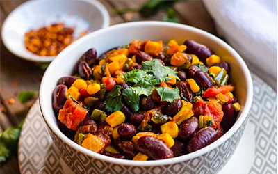

Drinken

Rooibos thee
Soepen

Efo riro

Egusi
Gerechten

Asun

Bobotie

Chakalaka

Domoda

Githeri

Maafe

Muamba de galinha

Ndolé

Potjiekos

Sese plantains

Doro wat

Yassa poulet
Bijgerechten


Bronvermelding
Achtergrond afbeelding
- Recepten Zuid-Afrika: Unsplash, Taylor Flowe, woman in purple and white dress sitting on brown wooden seat
Icons
Drinken afbeeldingen
- Rooibos thee: keukenliefde, 5-redenen-om-vaker-rooibosthee-te-drinken
Soepen afbeeldingen
Gerechten afbeeldingen
- Asun: kovafood, asun
- Attiéké: afrikana, attieke-a-national-dish-from-cote-divoire_60
- Bobotie: papertravels, bobotie-recept-zuid-afrika
- Chakalaka: allrecipes, chakalaka
- Domoda: samsungfood, 10117ffc528db0d6b4ff4bffcdd8c1ae5ede67883ae
- Githeri: eatwellabi, githeri-recipe
- Jollof: how-to-make-jollof-rice-in-5-easy-steps
- Kedjenou: tasteatlas, kedjenou
- Maafe: myprettybrowneats, maafe-west-african-peanut-stew
- Moin moin: seriouseats, moin-moin-nigerian-steamed-bean-cake-7091498
- Muamba de galinha: viagens.sapo, muamba-de-galinha-uma-iguaria-angolana
- Ndolé: arousingappetites, ndole-cameroonian-peanut-stew
- Potjiekos: outdooroutfitter, wat-is-potjiekos
- Sese plantains: preciouscore, cameroonian-sese-plantains
- Doro wat: eggs, doro-wat
- Yassa poulet: sainsburys, senagalese-style-chicken-yassa